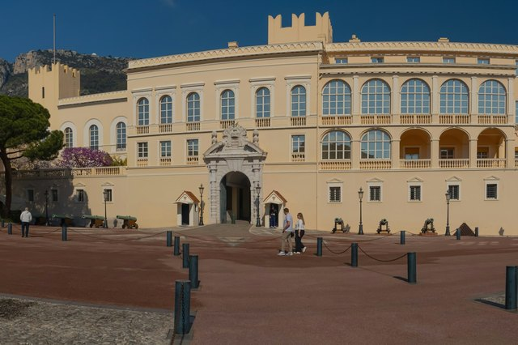
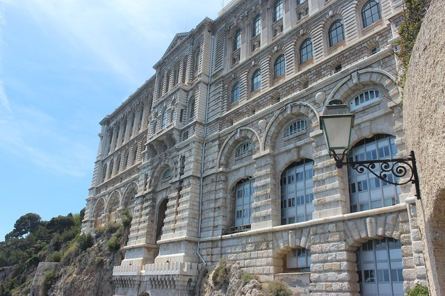

La Principauté se découvre en deux temps : le Rocher, vieille ville perchée où se trouvent le Palais princier et le Musée océanographique, puis Monte-Carlo, son casino et ses jardins. Entre les deux, le port Hercule et ses yachts.
Monaco est un pays à part entière, mais on y entre sans contrôle depuis la France et on paie en euros. Le relief est raide : des ascenseurs publics gratuits relient les différents niveaux de la ville, pensez-y avant de gravir les escaliers.
Un peu d’histoire
Le 8 janvier 1297, François Grimaldi, déguisé en moine, s’empare de la forteresse du Rocher : ses descendants règnent toujours sur Monaco. La principauté perd Menton et Roquebrune au XIXe siècle, puis se tourne vers le tourisme.
Le prince Charles III crée Monte-Carlo et son casino dans les années 1860. En 1956, le mariage du prince Rainier III avec l’actrice Grace Kelly donne à Monaco un rayonnement mondial.
Que voir à Monaco
Le Palais princier et la relève de la garde

Chaque jour à 11 h 55, les carabiniers du Prince relèvent la garde devant le Palais. Arrivez un quart d’heure avant pour avoir une place au premier rang. Les grands appartements se visitent une partie de l’année. Réserver une visite guidée ou une activité à Monaco
Le Musée océanographique

Fondé par le prince Albert Ier et accroché à la falaise, il réunit un aquarium remarquable et des collections scientifiques. La terrasse sur le toit offre l’une des plus belles vues de la côte.
La cathédrale de Monaco
Église en pierre blanche du Rocher, où reposent la princesse Grace et le prince Rainier III. L’entrée est libre en dehors des offices.
Les jardins Saint-Martin
Une promenade ombragée au bord de la falaise, entre le musée et la cathédrale. Idéal pour une pause à l’abri de la chaleur.
Le Jardin exotique

Rouvert en mars 2026 après six ans de travaux, ce jardin de cactus accroché à la falaise offre une vue plongeante sur le Rocher et Fontvieille.
Monte-Carlo et la place du Casino

Le casino, l’opéra et l’Hôtel de Paris forment l’ensemble le plus photographié de la Principauté. L’atrium du casino se visite en journée ; une tenue correcte est demandée.
Le port Hercule

Le cœur du circuit du Grand Prix de Formule 1, au pied du Rocher. Le long des quais, on mesure la taille des yachts amarrés.
Comment aller à Monaco
En train
La gare de Monaco-Monte-Carlo est desservie par les TER de la ligne côtière : une vingtaine de minutes depuis Nice, environ une heure depuis Cannes. C’est la solution la plus simple.
En car
Des cars régionaux longent la Basse Corniche depuis Nice. Plus lent que le train, mais avec la mer tout du long.
En voiture ou en chauffeur
Les parkings publics sont nombreux mais payants. Pendant le Grand Prix et les grands événements, la circulation est très difficile : préférez le train ou un transfert avec chauffeur.
Infos pratiques 2026 : Monaco
- Uber ne fonctionne pas à Monaco : un VTC venu de France peut vous y déposer, mais aucune course Uber ne peut être commandée depuis Monaco pour en repartir. Prévoyez votre retour à l’avance : train, bus Zou! 602, taxi monégasque ou chauffeur privé réservé pour l’aller-retour.
- Palais princier : 10 € pour les adultes, 5 € pour les enfants et étudiants (tarifs 2026).
- Parkings publics : parking des Pêcheurs pour le Rocher (palais, musée océanographique), parking du Square Beaumarchais pour le Casino.
- Bus depuis Nice : ligne Zou! 602 par la Moyenne Corniche, avec arrêt à Èze. Le TER Nice–Vintimille dessert la gare de Monaco-Monte-Carlo.
- À ne pas manquer : notre guide du village de Noël de Monaco 2026 (dates et accès).
Tarifs et horaires relevés en novembre 2026 auprès des offices de tourisme et des sites ; ils peuvent changer, vérifiez avant de partir.
Nos conseils pour visiter Monaco
- Commencez par le Rocher le matin (relève de la garde, musée), descendez au port pour déjeuner, puis montez à Monte-Carlo l’après-midi.
- Les jours de croisière, le Rocher est très fréquenté entre 10 h et 15 h : le musée reste la meilleure activité à ces heures-là.
- Gardez une tenue correcte pour la cathédrale et le casino.
Activités à réserver à Monaco
Réservation en ligne en quelques minutes, annulation gratuite sur la plupart des activités et avis de voyageurs pour bien choisir.
À réserver sur place
Activités en direct · GetYourGuide
Notre sélection Viator
-
Billets et visites à Monaco
Musée océanographique, Palais princier, visites guidées du Rocher.
-
Monaco, Èze et la Riviera en excursion
Journées en petit groupe au départ de Nice ou de Cannes.
-
Transfert Côte d’Azur avec chauffeur privé
Aéroport de Nice, gare, hôtel ou port : un chauffeur vous conduit à Monaco en van ou berline haut de gamme, prix fixe par véhicule affiché avant la réservation.
Liens partenaires.
À voir à proximité
- Monte-Carlo à environ 5 min à pied
- Le port Hercule à environ 10 min à pied
- Le Rocher de Monaco à environ 15 min à pied
Questions fréquentes
Faut-il un passeport pour aller à Monaco ?
Il n’y a pas de contrôle à la frontière entre la France et Monaco, mais gardez une pièce d’identité sur vous, comme partout en voyage.
Combien de temps faut-il pour visiter Monaco ?
Une journée suffit pour le Rocher, le port et Monte-Carlo. Comptez une demi-journée de plus si vous voulez prendre le temps au Musée océanographique.
Quel est le meilleur moyen d’aller à Monaco depuis Nice ?
Le TER : une vingtaine de minutes, avec une gare au cœur de la Principauté. La voiture est déconseillée les jours d’affluence.
Combien de temps passer à Monaco ?
Comptez une journée.
Que voir près de Monaco ?
Les sites les plus proches dans ce guide : Monte-Carlo (à environ 5 min à pied), Le port Hercule (à environ 10 min à pied) et Le Rocher de Monaco (à environ 15 min à pied).